※写真はイメージです
推しへの手紙を、ちょっと特別にする
和紙の猫の文香
OFF
- ケースなし
10枚2,200円30%OFF1,540円 - ケース入り
5枚1,680円25%OFF1,260円
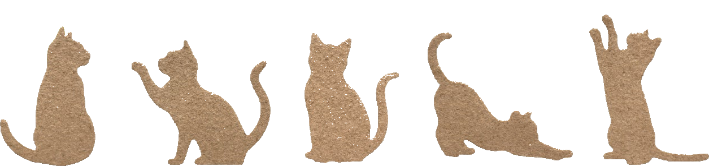
便箋にはさむだけの、香る和紙の猫。
観劇の日のファンレターに。送料無料
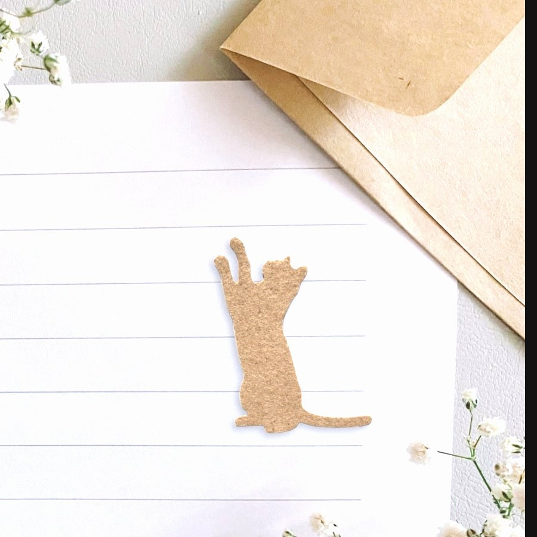
便箋にはさむ、
猫のかたちの文香。
感想は書けた。
でもいつもと同じ便箋と封筒。
そんな1通に
NeKouを1匹だけ。
手紙はそのままに
開けた瞬間をちょっと特別に。
NeKouとは？
推しへの手紙が
ちょっと特別に！
ケースなし10枚・このページのクーポン利用時
折れないように
1枚ずつ平袋に入れてお届け
手紙ごとに選べる
猫のポーズは
ファンレターのたびに
違う子を1匹ずつ。
手紙をじゃましない
NeKouの3つの特徴
はさむ
だけ!
便箋にはさんでも厚みや重さはほとんど変わりません。郵便料金もそのままです。
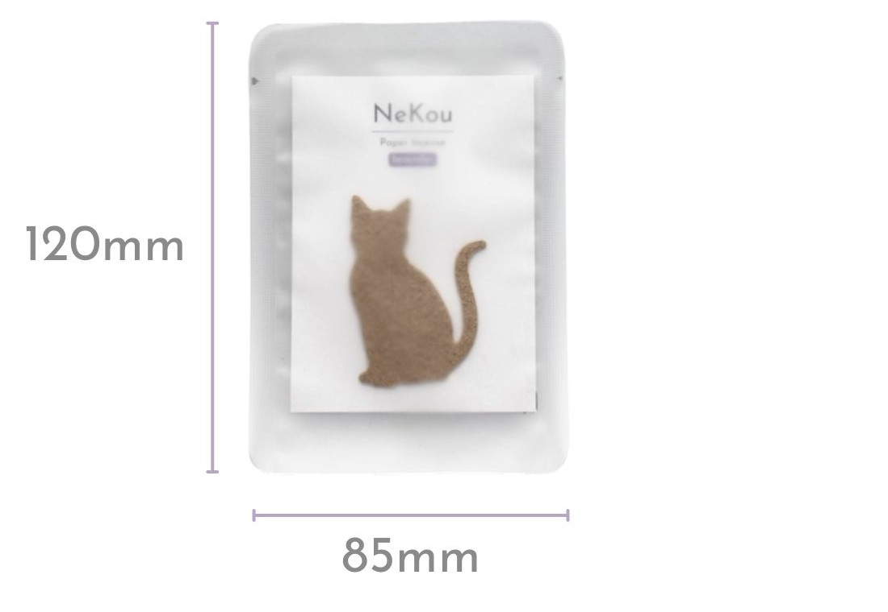

ポーズの違う5匹から、その日の気分や手紙の内容に合わせて選べます。
ラベンダーを淡路島のお香の職人が落ち着いた和の香りに仕立てました。やさしく控えめな香りが、手紙の言葉を引き立てます。
たとえば、観劇の日の1通に
 次の観劇は特別な日。
次の観劇は特別な日。手紙にいつもより
気持ちを込めたいな… プレゼントも考えたけど
ちょっと重いかな… この子いいかも！
手紙にそっと
添えてみよう 今日の手紙は
ちょっと特別。
※イメージです
ファンレターで迷ったことはありませんか？
手紙はそのままに
NeKouを1匹だけ。
開けた瞬間がちょっと特別になります。
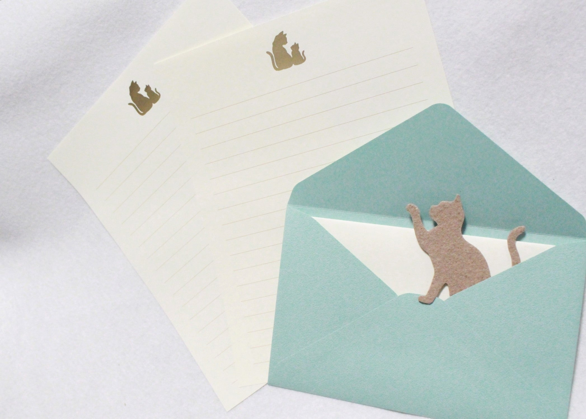
手紙に何を足す？
手紙をじゃましないNeKou
ほかの文香とくらべて
| 一般的な文香 | NeKou | |
|---|---|---|
| 1枚あたり | 約98〜220円 | 154円〜 |
| 形 | 四角など | 猫の形 |
| 送料 | 販売店による （200〜330円が多い） | 1セットから無料 |
※当社調べ（2026年11月・通販で販売されている文香7商品）。NeKouの154円はケースなし10枚をこのページのクーポン（30%OFF）で購入した場合
どっちがいい？
ケースなし10枚と、ケース入り5枚
- 中身
- 5ポーズ×各2枚
1枚ずつ平袋入り - クーポンで
- 1,540円
30%OFF - 1枚あたり
- 154円
ファンレター10通分。
次も、その次の手紙にも。
Creemaへ

ケース入りを2つなら30%OFF自分用と、手紙好きの友だちに1つ。2つで2,352円（NEKOU30）
※Creemaでのご購入には会員登録（無料）が必要です。クーポンはご購入画面の「クーポン」欄に貼り付けてください。
「推しへの手紙に入れて使っています。香りの主張が強すぎないところが気に入っています。」
ご購入者さまより（要約）
「ポーズが複数なのが良い。」
Makuakeでのコメントより
「かわいさに一目惚れ。」
Makuakeでのコメントより
NeKouのこと
Makuakeで応援いただいた
職人の和紙の文香
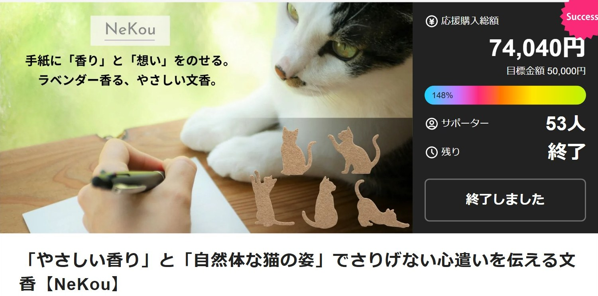
NeKouのこだわり
- お香を練り込んだ和紙淡路島のお香の会社が、和紙にお香を練り込んで漉く技法でつくっています。
- 無着色・IFRA基準の香料色は和紙そのままで、香料は国際的な安全基準（IFRA）をクリアしたものを使っています。
- 猫の型と抜き5種類の猫の型と抜きは、紙の専門店PAPIER LABO.が手がけました。
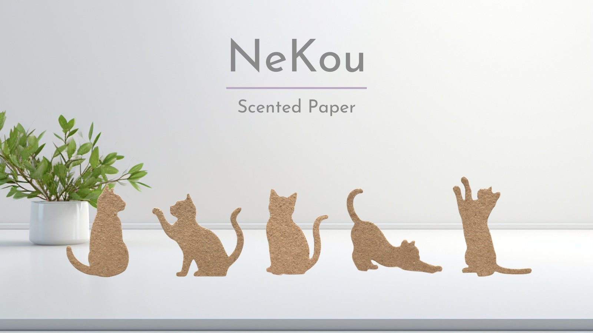
手紙の内容やその日の気分で選んでください。
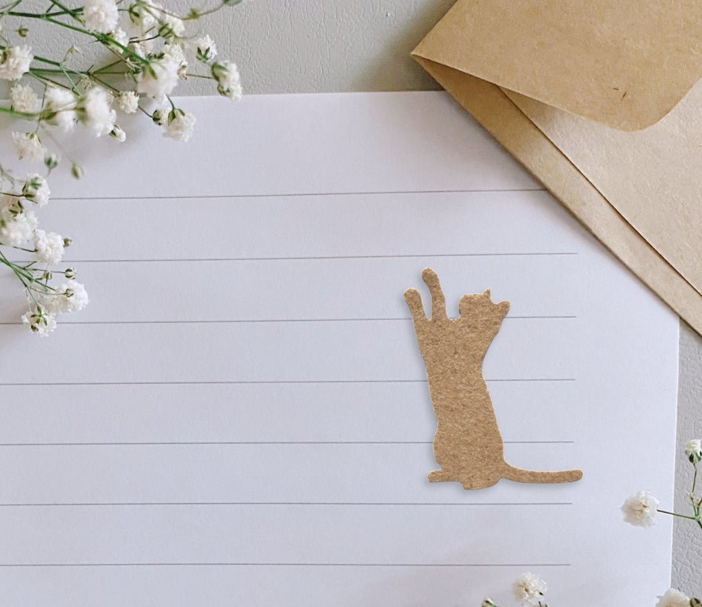
書き終えた便箋に1匹だけはさみます。
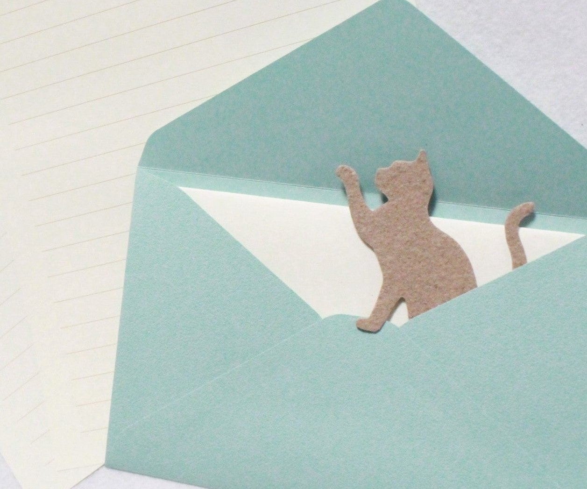
開けた瞬間に、ちいさな猫がのぞきます。
ほかにも友だちへの手紙や手帳、名刺入れにはさんで使えます。灰皿などの上で火をつけて、お香として楽しむこともできます。
このページで配布中のクーポン
30%OFF → 1,540円NEKOU30
25%OFF → 1,260円NEKOU25
・Creemaのご購入画面の「クーポン」欄に入力してください（1回のご注文で1枚）
・NEKOU30は2,000円以上のご注文で使えます（ケース入りを2つでも使えます）
・Creemaでのご購入には会員登録（無料）が必要です
・有効期限：2027年2月15日まで
・送料無料・ポストにお届け（匿名配送）・お支払いから3日以内に発送
ボタンを押すとクーポンコードがコピーされます
送る前にご確認ください
- 手紙以外の同封を受け付けていない事務所や劇場もあります。送る前に送り先の案内をご確認ください。
- 便箋1通に1枚が目安です。
- 布に直接触れると色移りすることがあります。
- 香りを保つため、湿気と直射日光を避けてなるべく密閉して保管してください。
Q&Aよくある質問
手紙に入れると郵便料金は変わりますか？
NeKouは和紙1枚で、重さも厚みもほとんどありません。便箋にはさんでも、ふだんの手紙と同じ料金で送れます。
香りはどのくらいしますか？
封を開けたときに、ふわりとやさしく感じるくらいの香りです。強く香るものではないので、手紙の言葉のじゃまをしません。
どんな香りですか？
ラベンダーを、淡路島のお香の職人が落ち着いた和の香りに仕立てています。花の香水のような華やかさより、お香らしいやわらかさを感じる香りです。
事務所や劇場に送っても大丈夫ですか？
手紙の受け付けのルールは、事務所や劇場ごとに異なります。手紙以外の同封をお断りしているところもあるので、送る前に送り先の公式の案内をご確認ください。
ケース入りとケースなしの違いは？
ケース入りは5枚（5ポーズ×各1枚）が専用のケースに入ったセットで、はじめての方や贈り物に向いています。ケースなしは10枚（5ポーズ×各2枚）で、1枚あたりの値段がお得です。どちらも1枚ずつ平袋に入れてお届けします。
届いたNeKouが折れていたら？
到着から14日以内に、Creemaのメッセージでご連絡ください。折れや欠けがあったものは、新しいものと交換します。
いつ届きますか？
お支払いの確認から3日以内に発送し、ポストにお届けします。お届けまでの日数は地域によって異なります。
名前や住所を知られずに買えますか？
Creemaの「あんしん匿名便」でお届けするので、購入者さまと出品者のどちらも、名前や住所を相手に知らせずにやりとりできます。
ラッピングはできますか？
申し訳ありませんが、ラッピングは承っていません。ケース入りは専用のケースに入っているので、そのままちょっとした贈り物にもお使いいただけます。
クーポンはどこで使いますか？
Creemaのご購入画面にある「クーポン」の欄にコードを入力してください。1回のご注文で使えるクーポンは1枚です。NEKOU30は2,000円以上のご注文で使えます。
お香として焚くこともできますか？
できます。灰皿など燃えないものの上で端に火をつけると、お香として香りを楽しめます。煙が出るので換気をしてお使いください。くわしくは同封の説明カードをご覧ください。
どのように保管すればいいですか？
香りを保つため、高温多湿と直射日光を避けて、なるべく密閉できる袋や箱に入れて保管してください。